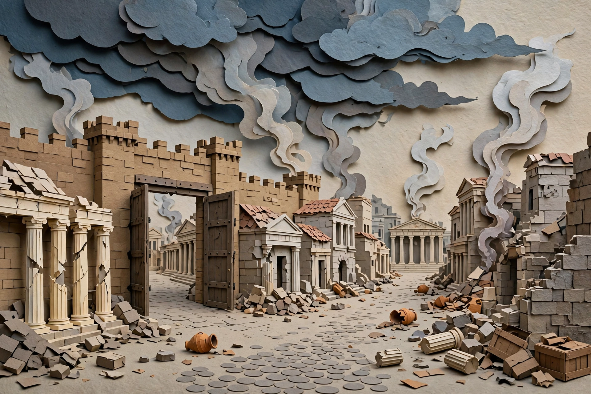


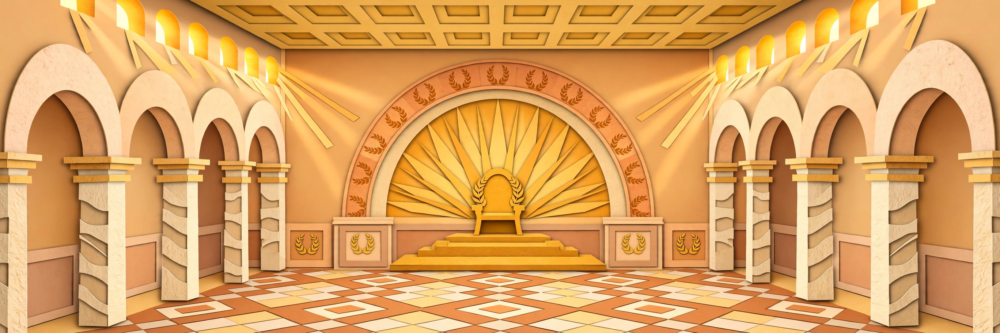


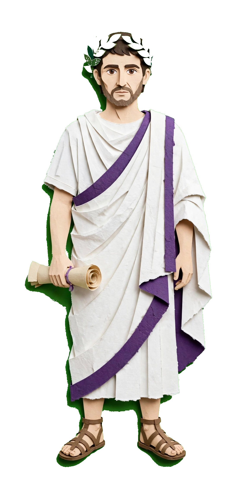
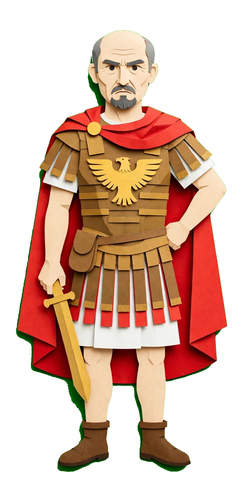
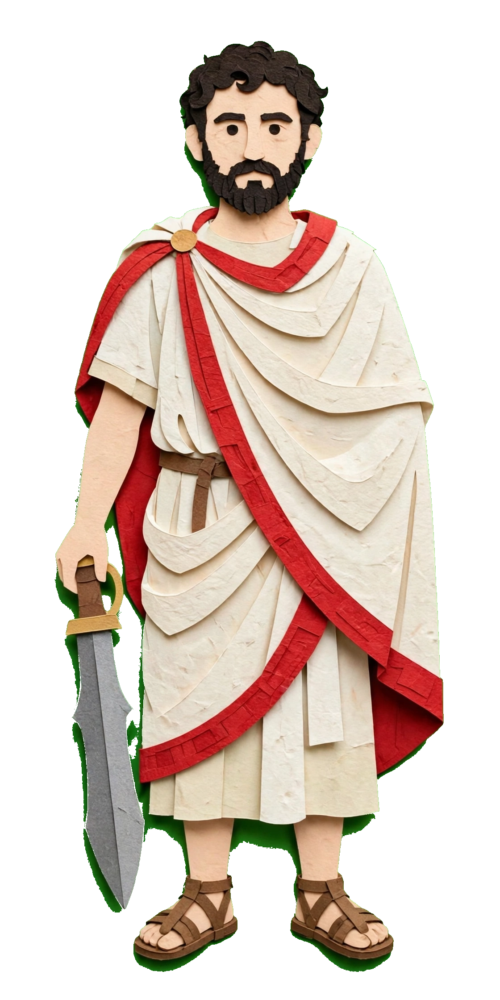
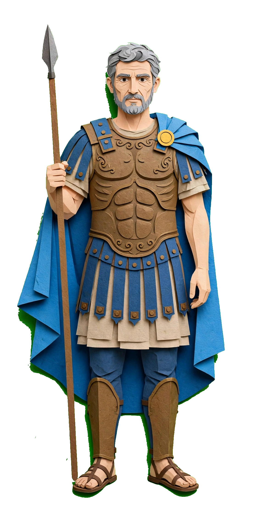

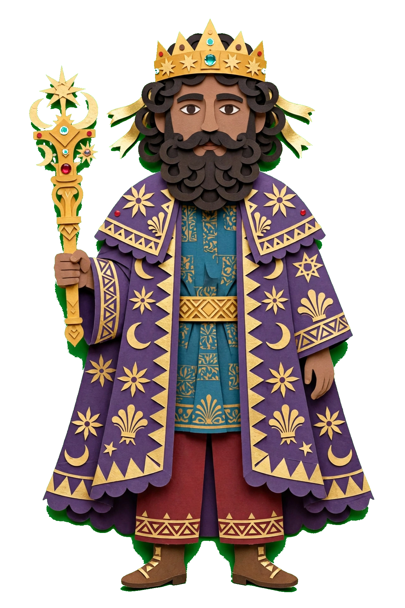
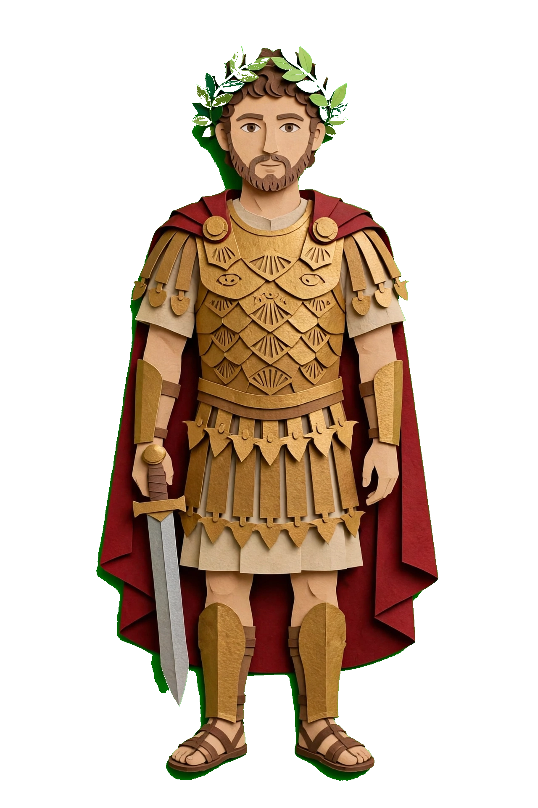
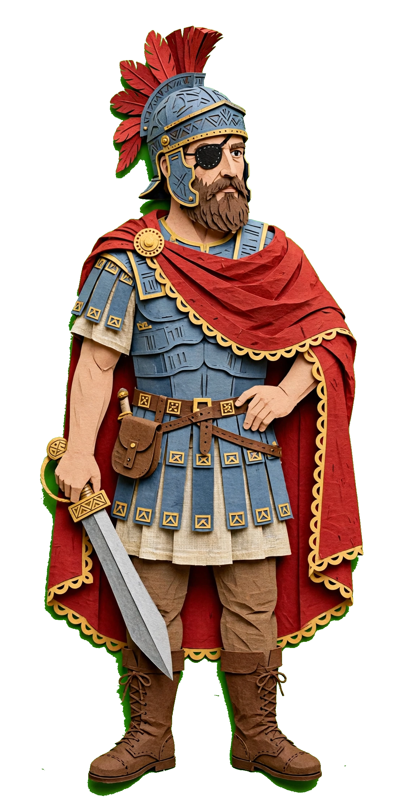
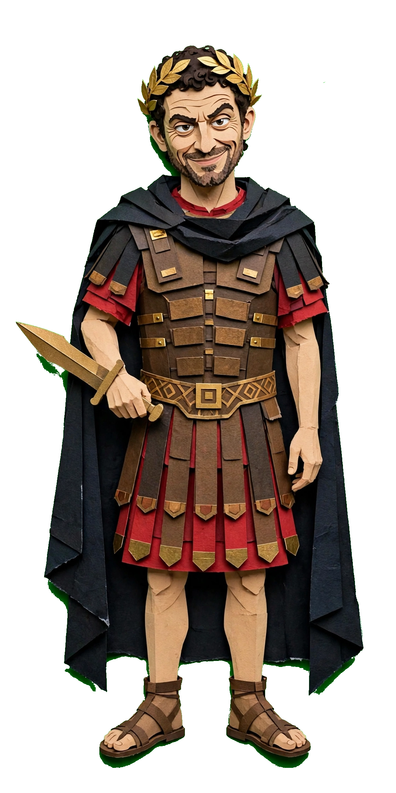
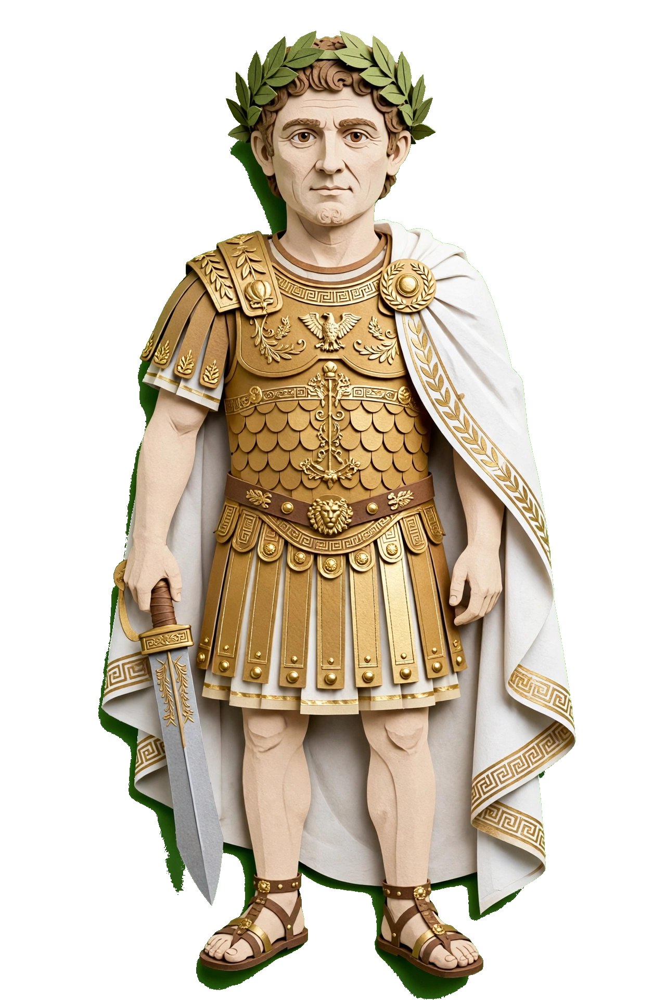
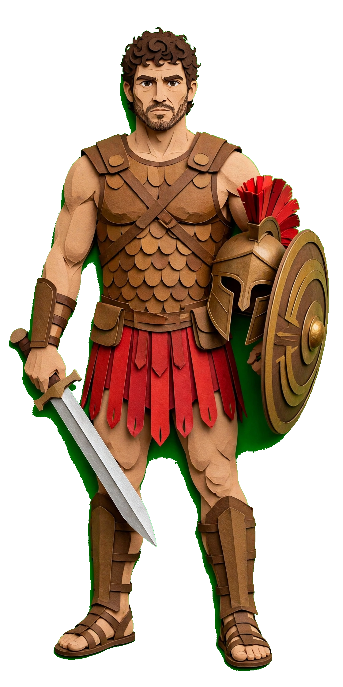
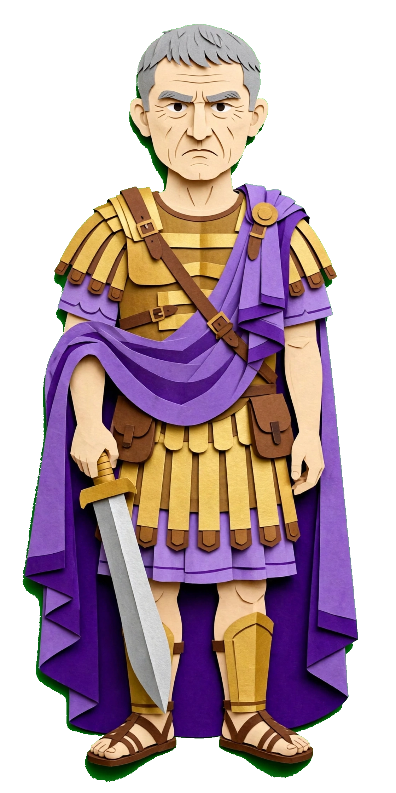

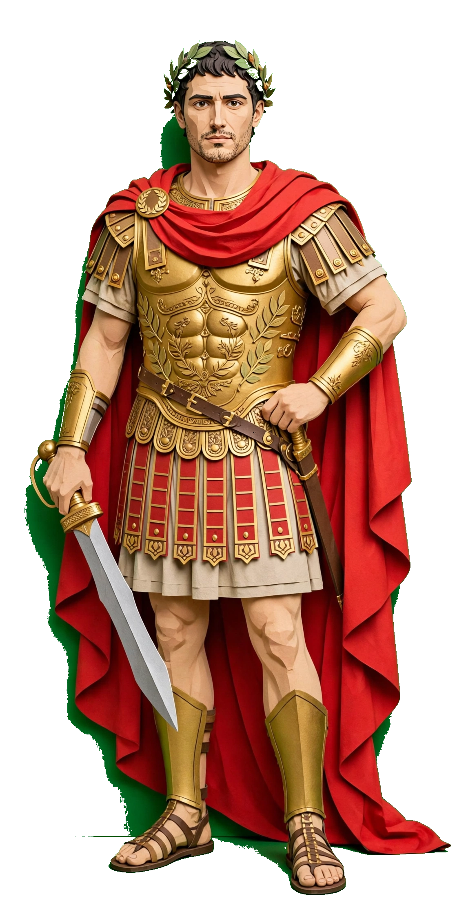
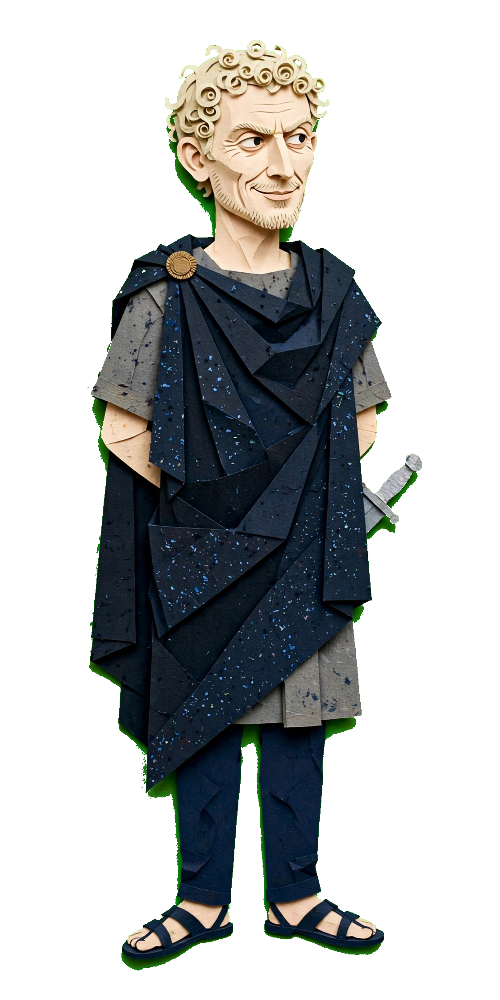

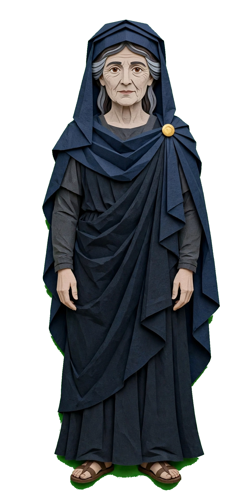


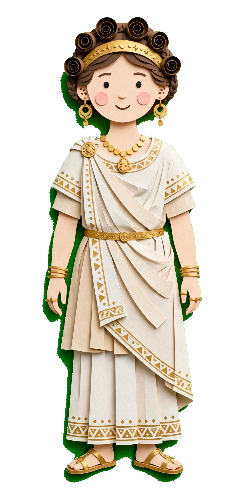
Sulla marches on Rome, 88 BC
First Mithridatic War
Octavius left in charge
Marius and Cinna seize Rome
Marius dies — Cinna rules alone
Flaccus sent against Sulla
Sulla wins over Flaccus's troops
Battle of Mount Tifata, 83 BC
Sulla wins — dictator, 82 BC
Murena's Second Mithridatic War
A pause with no clear result, 81 BC
The Sertorian War, 80 BC
Sertorius leads the rebellion
Eight draining years in Iberia
Perperna murders Sertorius
Pompey ends Perperna
Third Mithridatic War — the largest, longest
Ten years of war
Third Servile War, 73 BC
70 gladiators escape
Spartacus — 100,000 rebels
Crassus takes command
Pompey returns — Spartacus falls
The Republic crumbles
Julius Caesar — born 100 BC
Siege of Jerusalem, 63 BC
Catiline's conspiracy, 63 BC
Pompey joins the First Triumvirate
Caesar's father, his uncle Marius
Ally of Cinna, enemy of Sulla
Married to Cornelia, daughter of Cinna
High priest of Jupiter — then Sulla strips him
Caesar goes into hiding
His mother's family softens Sulla
Soldier — wins the civic crown
Sulla dies, 78 BC
Caesar returns to Rome
A modest home — a new career as lawyer
Captured by Cilician pirates, 75 BC
Ransom: 20 talents? No — 50!
His men fetch the money
Caesar orders pirates around, recites poetry
Oddly, the pirates grew fond of him
I will have you all crucified
Freed — Caesar builds a fleet
He recaptures the pirates
Executed at Pergamon
Military tribune, then quaestor 69 BC
Quaestor in Hispania
Marries Sulla's granddaughter
Aedile, Pontifex Maximus, praetor
Propraetor — hailed Imperator
60 BC: triumph or consul?